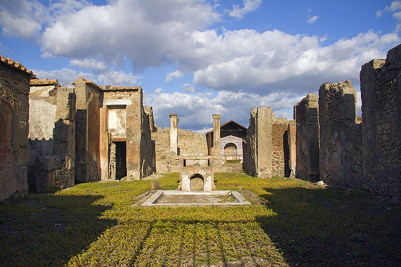
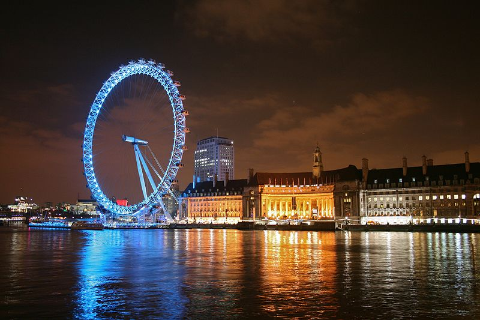
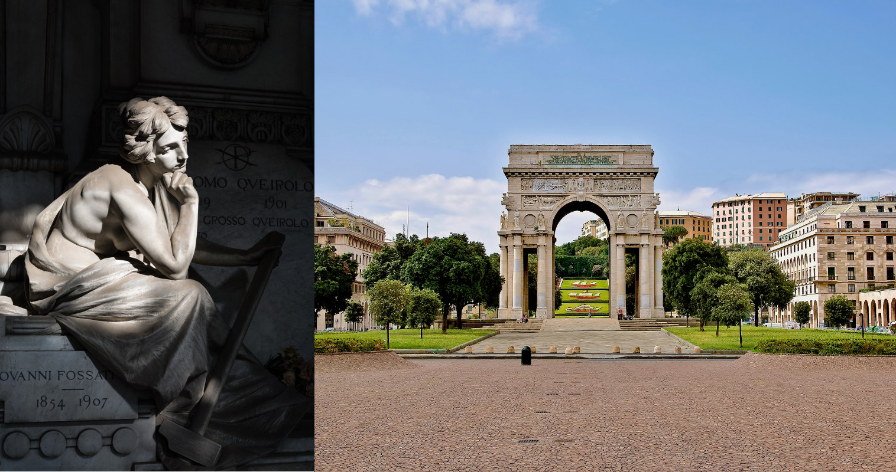
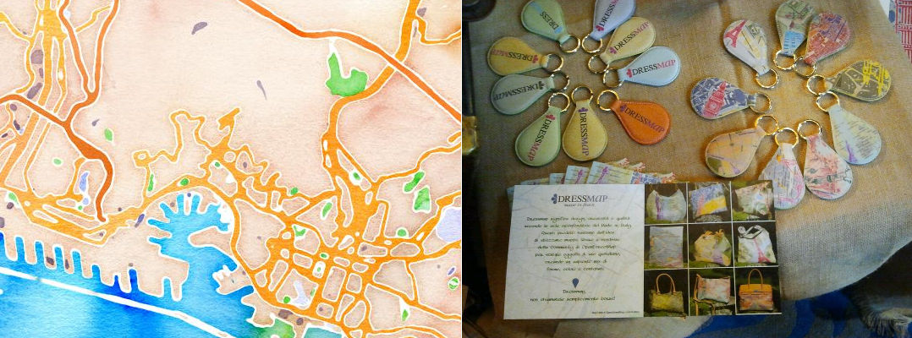

Creatività e crowdsourcing
Il concorso Wiki Loves Monuments ed OpenStreetMap
Wiki Loves Monuments
Tra Wikipedia e libertà di panorama
Cos'è Wiki Loves Monuments?

- Il più grande concorso fotografico
- Organizzato dai capitoli di Wikimedia Foundation
- Aumentare le foto di qualità in Wikimedia Commons
Problemi con la legislazione
Foto del concorso in CC-BY-SA (riuso anche commerciale)
- Codice Urbani: richiesta l'autorizzazione del titolare dei diritti
- Decreto ArtBonus: eccezioni da "social network"
Ovvero: niente libertà di panorama
Perchè WLM?
- Chiedere cambiamenti legislativi
- Promuovere la cultura libera
- Valorizzare il proprio lavoro e Wikipedia
Risultati del concorso 2014
- 273 istituzioni
- 4500 monumenti autorizzati
- 1038 partecipanti
- 21050 fotografie
OpenStreetMap
Crowdsourcing geografico e diritto nei database
Cos'è OpenStreetMap?
- Crowdsourcing: La "Wikipedia delle mappe", nata nel 2004
- Community: Più di due milioni di utenti registrati
- Database geografico ed archivio gps più grande al mondo
La licenza di OpenStreetMap
- 2012: transizione da CC-BY-SA ad ODBL
- ODBL: circa BY-SA per le basi di dati
Diritto delle basi di dati
- Collezioni "creative" -> copyright (70 anni)
- In USA: collezioni di fatti -> no copyright
- In EU: collezioni di fatti -> copyright (15 anni)
Le piccole comunità di OpenStreetMap

- Kibera: slum di Nairobi (Map Kibera)
- Vervò: paese della Val di Non (M'appare Vervò)
Creatività con OpenStreetMap
- Mappe in qualsiasi formato (carta, smartphone,...)
- Arte (rendering e non solo)
- Scienza (analisi dati, routing)